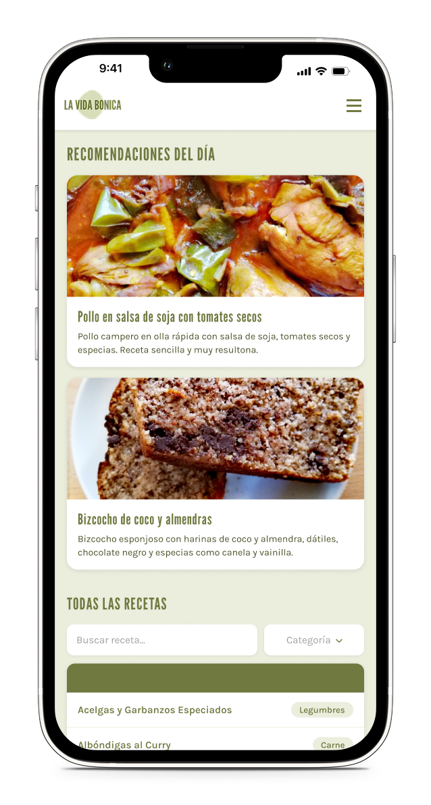

Más de 550 recetas probadas, elaboradas con ingredientes naturales y 0 ultraprocesados.

Encuentra recetas por nombre o categoría. Carne, pescado, legumbres, postres… todo organizado para que encuentres lo que buscas en segundos.
Arrastra recetas a tu planificador y organiza la semana entera. Sin improvisar, sin desperdiciar comida.
Se genera automáticamente a partir de tu planificación semanal, organizada por categorías. Solo compra lo que necesitas.
Guarda tus recetas preferidas para acceder a ellas rápidamente. Tu colección personal, siempre a mano.
Selecciona varias recetas y la app te genera un plan de batch cooking optimizado: orden de preparación, tiempos y consejos.
App web que funciona en el móvil, tablet u ordenador. Sin descargas, sin registros, sin complicaciones.
Navega por más de 550 recetas saludables y reales de La Vida Bonica.
Añade recetas al planificador semanal con un solo toque.
La lista de la compra se crea sola. Ve al súper con todo claro.
Empieza a planificar tus comidas de forma sencilla. Sin registro, sin coste, sin excusas.
Abrir la App